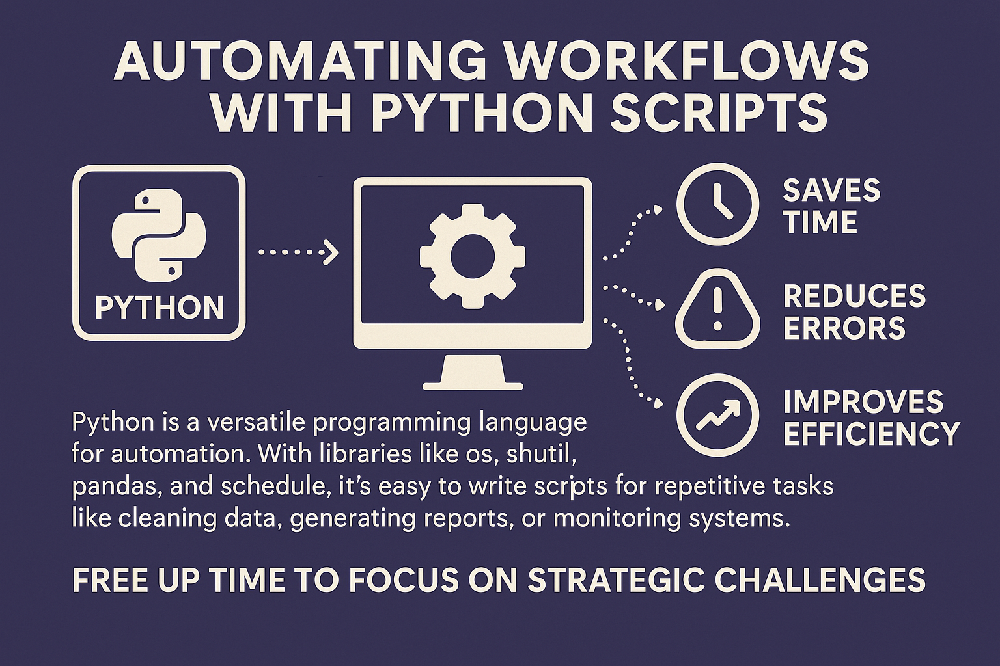

Python is one of the most versatile programming languages when it comes to automation. With libraries like os, shutil, pandas, and schedule, it becomes easy to write scripts that perform repetitive tasks such as cleaning data, generating reports, or monitoring systems.
Core Automation Libraries:
- os/shutil: File system operations, file manipulation
- pandas: Data processing, cleaning, and analysis
- schedule: Scheduled task execution
- requests: API interactions and web scraping
- subprocess: System command execution
Automation Benefits:
- Time Savings: Automate hours of manual work into minutes
- Error Reduction: Eliminate human error in repetitive tasks
- Consistency: Ensure standardized processes every time
- Scalability: Handle growing workloads without additional effort
- Monitoring: Continuous system health checks and alerts
Whether it's for personal productivity or enterprise-level operations, scripting repetitive processes is a superpower. Automating workflows frees you up to focus on more strategic challenges and helps standardize routines that can otherwise be inconsistent or error-prone.
Example Script Structure:
import os
import shutil
import pandas as pd
from schedule import every, run_pending
def daily_report():
# Generate daily data report
data = load_data()
report = process_data(data)
save_report(report)
def cleanup_old_files():
# Remove files older than 30 days
remove_old_files(30)
def main():
every(1).do(daily_report)
every('5/30').do(cleanup_old_files)
run_pending()
if __name__ == "__main__":
main()